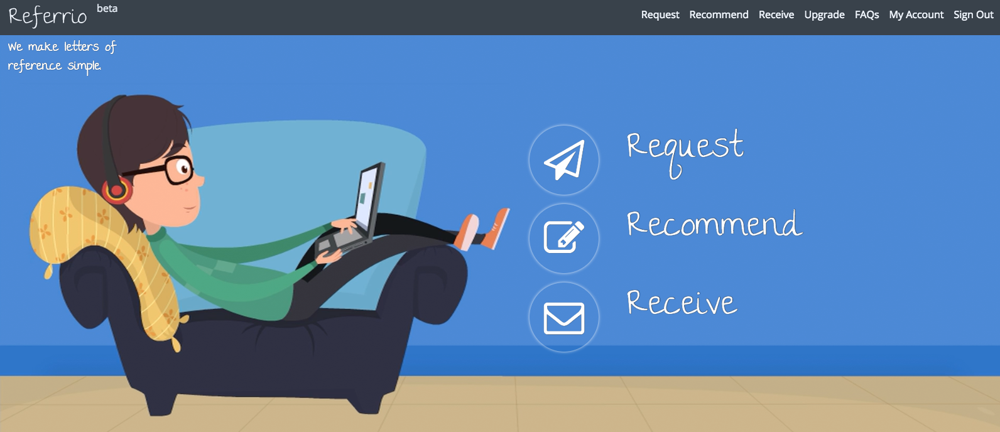
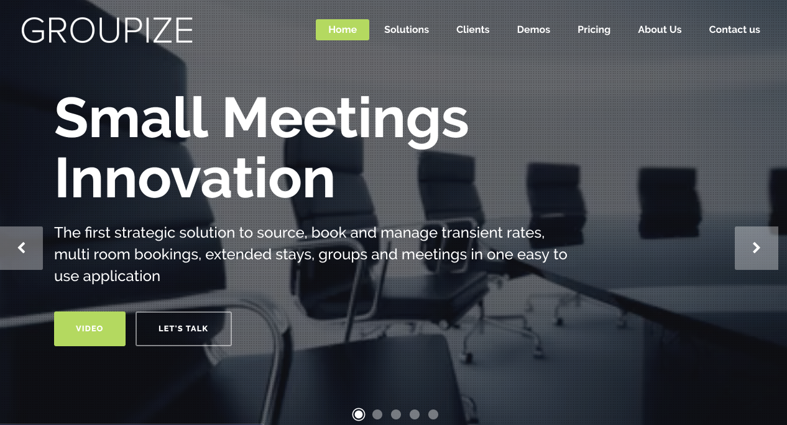
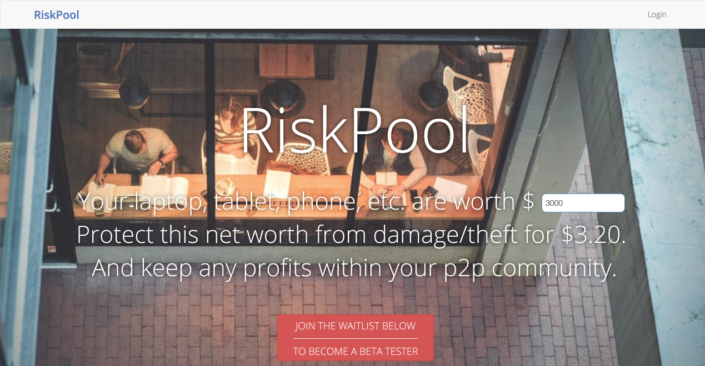

Projects
Client Work
Referrio

Worked directly with the founder and alongside another solo contractor on features and bug fixes from November to December 2016. The rails app interfaces with the typeform to allow the semi-technical founder to engage in rapid prototyping of the user interface. Main tasks:
- Fixing bugs related to communication between typeform and rails backend.
- Fixing bugs related to checkout flow with Stripe
- Implementing coupon codes to be used on kickstarter campaign
- Moving hosting from heroku to AWS Lightsail and setting up automated deployment with capistrano.
Student Success Agency
Worked alongside the team at Velocis LLC from June to September 2016. The rails app uses twilio to route calls and text messages between high school students and college aged mentors who guide them through the college admissions process. Main tasks:
- Refactoring and performance tuning of CSV exports for the administrative site
- Creating a messaging system for routing emails to and from user’s personal email accounts.
Groupize

Worked as part of the distributed development team at Groupize from December 2015 to May 2016. Groupize has a pair of rails apps which provide group travel sourcing for travel planners at firms and corporate travel departments and lead management software for group sales teams at hotels. Main tasks included:
- Adding and maintaining hotel user interface using Ruby on Rails and emberjs
- Creating a dashboard and email routing system for travel planner users using backbone js and Ruby on Rails.
- Keeping data in sync from the hotel and planner applications via their respective APIs
RiskPool

Built out a beta version of a rails app for a peer-to-peer insurance platform. Worked as a solo contractor as well as on a small distributed team of contractors between Cleveland and New York. Main tasks included:
- Workflow for creation of self-insurance groups (pools) from user invitation to, petitioning to join a pool to acceptance into the pool and attendant permissions for these different user states/roles
- Tool for estimating premiums using react
- Domain logic for premiums, how much user’s pay versus how much they have to keep etc.
- Administrative dashboard
Open Source
On my github I have several open source projects. Nothing major just various command line tools to simplify common tasks and experiment.
dossh
CLI written in elixir uses the digital ocean API to return a list of droplet names and ip addresses to make sshing into them easier. Gave me a good excuse to solve a real problem (the digital ocean UI is very friendly so I use the term “problem” loosely) and practice releasing an elixir package.
site | source
get_freaky
CLI for the confreaks API that permits browsing and downloading convention videos from the command line. Written as a ruby gem using the excellent commander and httparty gems for the command line interface and interacting with confreaks public api respectively. I write about this in greater detail in this post
site | source
dot_example
A command line tool for keeping configuration variables in sync across a team. Builds on using the dotenv gem and the convention of storing ENV variables in a .env file and automatically documents the changes in the keys for this file without the need for manual updating of a .env.example file.
site | source
enter
Simple command line tool to make navigating projects with tmux easier. Just type enter and it’ll give you a list of all your projects from a projects directory and lets you fuzzy search for the one you want and then create a tmux session with the same name, with the working directory set to the project’s root.
source
dotfiles
Dotfiles kept in sync using thoughtbot’s rcm utility.
source